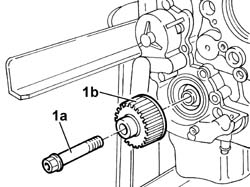
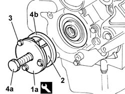
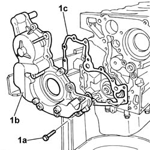
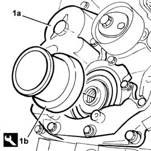
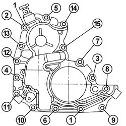
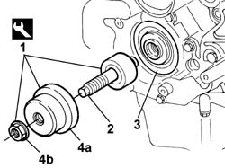

1084B14 ENGINE OIL PUMP - R+R WITH POWER UNIT REMOVED
- Path
- Procedures > 10 ENGINE UNIT > 1084 ENGINE LUBRICATION SYSTEM > 1084B ENGINE OIL LUBRICATION CIRCUIT > 1084B14 ENGINE OIL PUMP - R+R WITH POWER UNIT REMOVED
- Kind
- repair procedure (removal / refitting; the operation number is the code)
- Applies to
- engines: 2.3 JTD 16V; all production periods
- Interactive page
- https://sloeber94.github.io/elrnDB-fDct/en/#/244000930
Applies to: engines: 2.3 JTD 16V; all production periods
 Removing
Removing
 Refitting
RefittingSee in Op. 1004D40
Op. 1032B16 TOOTHED TIMING BELT - R R WITH ENGINE REMOVED
1. Undo the bolt (1a) and remove the timing belt toothed drive wheel (1b).

Applies to: engines: 2.3 JTD 16V; all production periods
1. Use the tool described below to extract the oil seal.
2. Position the tool extraction jaws in the oil seal splining.
3. Secure the extraction pincers in position using retaining bolts.
4. Tighten the tool pin (4a) to remove the oil seal (4b) from its seat.
 | Description | Code | Function |
|---|---|---|---|
1 | Extractor | 99340057 | Extracting timig side crankshaft element |

Applies to: engines: 2.3 JTD 16V; all production periods
1. Undo the bolts (1a) and remove the crankshaft front cover (1b) with vacuum unit and oil pump incorporated plus the gasket (1c).

Applies to: engines: 2.3 JTD 16V; all production periods
Refitting
Removing- Fit a new front crankshaft front cover gasket.
- Position the crankshaft front cover with vacuum unit and oil pump incorporated and screw in the fixing bolts without tightening them.
1. Centre the crankshaft front cover with the vacuum unit and oil pump (1a) incorporated using the tool (1b).
| Description | Code | Function |
|---|---|---|---|
1b | Locator | 99396037 | Tool for locating front crankshaft cover |

Applies to: engines: 2.3 JTD 16V; all production periods
1. Tighten the crankshaft front cover fixing bolts in the recommended order.
 | Value - daNm | Fastening | Component | Ø |
|---|---|---|---|---|
. | 1.0 | Bolt | ENGINE OIL PUMP | M6 X 1 |

Applies to: engines: 2.3 JTD 16V; all production periods
1. Use the tool described below to fit the timing side oil seal.
| Description | Code | Function |
|---|---|---|---|
1 | Fitting tool | 99346254 | Front cover gasket fitting |
2. Tighten the threaded tool pin until it comes into contact with the crankshaft drive gear seat.
3. Position a new oil seal in its seat.
4. Position introduction tool (4a) in contact with the oil seal and tighten the nut (4b) to fully fit the oil seal into its seat on the front cover.

Applies to: engines: 2.3 JTD 16V; all production periods
Op. 1032B16 TOOTHED TIMING BELT - R R WITH ENGINE REMOVED
See in Op. 1004D40